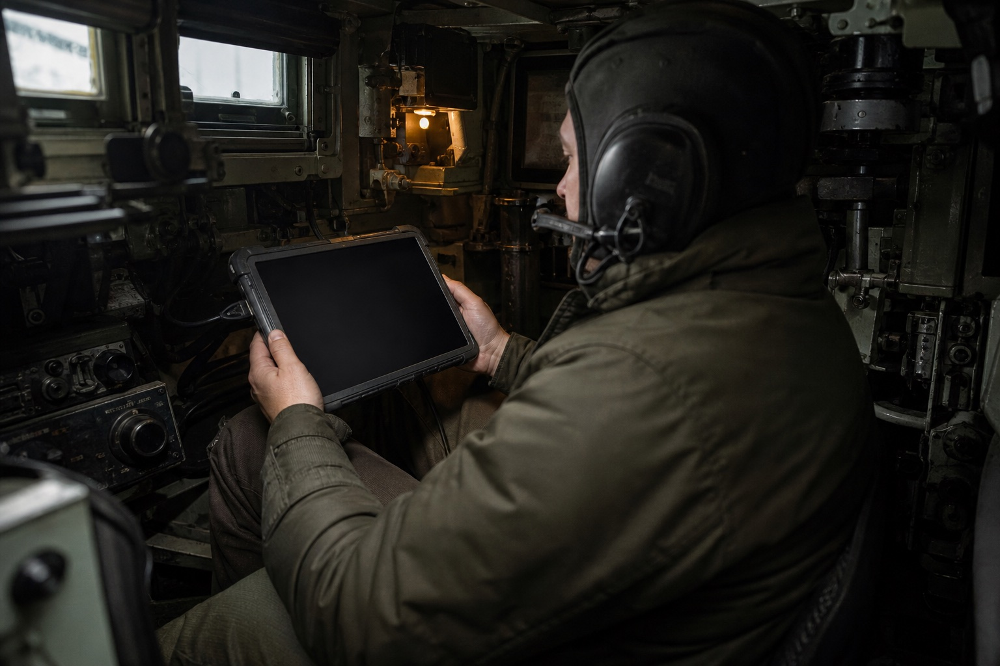

Consulting engagement under NDA, delivered with a partner agency. Names, program identifiers, and incident details have been altered; the process and outcomes are real.
Case 01 / Armoured crew systems · 2024 · Under NDA
What’s loaded. What was ordered.
CHARGEUR is a load-state system for an armoured vehicle crew. We redesigned the
commander, gunner and fleet surfaces so a mismatch becomes impossible to miss—and every person reads
the same operational truth.
Design partnerRugged tablet UIDefence
41% faster Type-switch completion in evaluation
0 mismatches Across 24 reruns of the critical scenario
67 components A reusable, operator-first system
Case in one line
A near-miss exposed a state-communication failure—not a hardware failure. The redesign moved the
product from “system ready” to a shared, explicit answer: requested type, chambered type, and what
the crew should do next.
8 minute read · Product + service design
On a training exercise in Champagne, Victor 4, a
three-man crew in their third year on the ALT-3 tank, engaged a simulated target.
The commander requested an armour-piercing round. The amber light
confirmed it. The gunner fired a shaped charge
instead.
In the debrief, the crew couldn't explain it. The interface had
confirmed readiness, and they trusted it.
That incident report reached our team six weeks later. It was the fourth near-miss that year.
The brief called it a refresh. The incident report said otherwise.
A specialist defence agency brought us into a European armoured-vehicle programme after four
near-miss reports. The engineering brief asked for a visual refresh of the existing panel.
The evidence pointed somewhere else: hardware state existed, but the interface collapsed
“system ready” and “requested round loaded” into the same signal. This was not a styling problem.
It was a broken contract between machine and crew.
Our remit expanded from one panel to the shared
state model across commander, gunner and resupply.
What the software is, and who is holding it
The software
CHARGEUR manages the ammunition load inside the ALT-3 main battle tank: what is
stowed, what is chambered, and what the fire order asked for.
Who uses it
Two people in the turret, a commander and a gunner, on a rugged tablet each. Outside the vehicle, a
logistics officer running resupply for a sector of eight.
Why it is not a normal brief
Misreading a round type costs seconds the crew does not have. A flaw here does not show up as a drop
in engagement; it shows up as a wrong shot.
A machine you never touch, but have to trust completely
Here's the thing about the ALT-3 autoloader: it's genuinely impressive. A sealed carousel with 30
rounds, OFL (armour-piercing, for punching through plate), OCC (shaped charge, for penetrating fortifications), and OE (high-explosive, for everything else). The commander picks a type, the
carousel spins, and in eight seconds there's a round ready to fire.
The crew never touches the ammunition. Not during a mission, not during an engagement. They push
a button, they wait, and they trust.
And that is the thing: trust. Three different round types, three different tactical
purposes, and the only thing standing between the right call and a wrong shot is a small amber
light on a panel designed before most of the crew was born.
That trust is the entire design problem.

Reconstructed context image · The product had to remain readable in low light,
vibration and a workspace where the operator cannot change posture to accommodate the interface.
"They never touch the ammunition. They push a button and trust. That's the whole
design problem in one sentence."
Thirty rounds, three types, one breech. The commander picks a type and waits four seconds
without seeing anything move.The autoloader already knew what was chambered. The old panel just never passed it on.
Both crew members now read the same state from the same source.
A small remote design team, four escorted site visits
Our role
Design partner · discovery to handoff
Duration
4 Quarters (2024)
Team
2 designers · 4 engineers · agency safety lead
Agency
Atelier Numérique Défense
🔒 The clearance problem
Each site visit required a 3-week advance request, approved by both Agency's security
officer and the base commander. Four visits over four quarters. Every observation had to count.
🌍 The remote translation problem
For the first three months, the entire project ran over Figma shares and video calls bridging IST
and CET. Every design decision had to be documented well enough to survive a handoff none of us would be in
the room for.
📱 The hardware constraint
Prototype testing moved from A3 laminated printouts (lo-fi) to a ruggedized Android tablet
running a web prototype (mid-fi) to a hardware simulator (final). Each medium introduced
fidelity gaps.
4 site visits. 11 interviews. 3 years of incident
reports. That's where we started.
What they were trusting was this.
Before CHARGEUR, crews relied on a primitive software console that suffered
from critical UX failures:
No text labels
Status codes and glowing blocks. Nothing on the panel spelled out a round type.
No totals
Crews memorised what was left, or kept tally marks on tape.
No verification
Nothing on the panel could confirm the chambered round before firing.
Three ways that failed in the field
Victor 4 asked for an armour-piercing round and got a shaped charge. The amber light still said
ready. Nobody in that crew had a way to catch it before the trigger.
"The commander's on the radio and I'm just… hoping." The commander picks the round. The gunner
pulls the trigger, with no screen, no status, nothing.
How many are left is a simple question the panel could not answer, so crews guessed and called
counts over the intercom. Four incident reports in three years came down to guessing wrong.
And outside the tank? Even less.
The supply officer's job was to keep eight vehicles armed and running. His tool was a shared Excel
spreadsheet. Columns for each vehicle. Rows for round counts. Updated by radio, whenever someone
remembered to call in.
"6 rounds remaining, est." That one word. Est. Estimate. The supply officer was making
life-or-death logistics decisions based on a number that a three-person crew guessed over the radio,
mid-mission.
Supply Officer, Camp de Mourmelon
We went to find out how often this happened.
Field visits
4 sessions, Champagne
Interviews
11 participants
Incident logs
22 over 3 years
Usability audit
Military display standards
Visit 2,
March 2024, 06:00 briefing
The pre-mission loading sequence took 34 minutes. Two crew members physically handled each round: one to
retrieve, one to confirm the type label verbally before handing it to the loader. Every round was
announced aloud: "OFL, slot three." "OCC, slot four." A ritual. A verbal design that the
software had never matched.
We sat in the corner and counted. Fourteen rounds without incident. On round fifteen, an OE, there was a
two-second pause before the verbal confirmation. The crew member had picked up an OCC. He caught it. Set
it down. Retrieved the correct round.
That pause was 2 seconds. In the field, under stress,
that pause might not happen. That's how close-call errors work: invisible to the person who catches
them.
Key findings
Mismatch rate: 4 confirmed mismatches in 22
incidents, 18% of all reported training incidents involved the wrong round type
Blind handoff: In 100% of observed
engagements, the gunner had zero visibility into which round type was chambered
Mental count errors: Crew estimates were off
by an average of 2.4 rounds when compared to actual counts post-mission
Existing workarounds: Every crew had invented
at least one unofficial method, tally marks on tape, verbal call-outs, or a written log
Every workaround was a design that already existed,
just not in the software.
The system shows state.
It needs to show truth.
These are different things.
One screen, three answers, zero ambiguity
The commander panel is a single-screen tablet interface that answers three questions at a glance:
What's loaded? How much is left? Is the system ready? The top bar shows telemetry (barrel temp,
hydraulics, target distance) and autoloader status. The center shows the chambered round type in
massive, named text with a material colour for OFL, OCC and OE. A neutral verification state confirms
the match without spending warning colour on normal operation. The right column shows three clickable ammo inventory cards. Tap one to
request a type switch.
96px text, OFL=blue, OCC=orange, OE=green. Zero ambiguity.
Commander panel, OFL loaded, system nominal. Barrel temp, target distance, ammo counts all visible at a glance.
Match Badge
A labelled, neutral confirmation appears only when requested and chambered types match.
Inventory Bars
Live count per type, fill bar + number. Tap to switch.
And when something doesn't match? The panel doesn't just turn yellow and leave
you guessing. It tells you exactly what went wrong, shows both the requested and the chambered type,
and gives you two clear options: abort and recycle, or confirm the override. No alarm bells, no noise.
Just the truth, and a choice.
Named Alert
Not just a light, crew knows exactly what triggered it.
Actual vs. Expected
Both types shown at once, crew sees exactly what's wrong.
Mismatch state, OCC chambered when OFL was requested. Crew sees both types and must make an explicit choice.
System Alert State
Amber topbar shifts entire UI before finger touches trigger.
Two Explicit Choices
Abort or override, no hidden defaults, no accidental fires.
If Victor 4 had had this screen, they would have
stopped. That's all we needed to hear.
The second screen does not create a second truth. The
gunner receives the same chambered type and match state from the same source—read-only, always visible,
and without a radio call.
One state model · two role-specific surfaces
Replacing the spreadsheet with a tactical map
The supply officer needed to see his entire fleet at once, which vehicles are running low, how
urgently, and what to send them. So we built Fleet Command: a tactical map with diamond-shaped vehicle
markers (neutral for nominal, amber for low), plus an inline priority queue at the bottom showing
urgent vehicles with a one-click ASSIGN button to dispatch resupply.
Low Status
Amber = running low but still operational. Act soon.
Critical Status
Pulsing red diamond = critical. Readable from any distance.
Fleet overview, eight vehicles on the tactical map. Nominal vehicles recede; amber and red surface work.
Fleet Summary
5 OK · 2 LOW · 1 CRIT at a glance.
Sidebar List
Critical surfaces first, same hierarchy as the map.
Who needs
help first?
When three vehicles are low and you've got one resupply truck, you need priorities. The queue sorts them:
most critical first, one click to dispatch. When a critical vehicle clears back to neutral, the supply officer
sees it happen. For the first time, the loop actually closes.
Priority Sort
P1 at top, auto-sorted by severity, not arrival order.
Priority queue, critical vehicles first. Assign a truck, watch them drop
off the list.
Batch Dispatch
All critical vehicles dispatched in one tap.
One-Click Dispatch
Assign truck without leaving the queue. Loop closes.
Per-Type Counts
OFL/OCC/OE shown per vehicle, not just "low".
A shared foundation, not a shared skin
We built 67 components around one rule: colour never carries meaning alone, and it only appears when it
helps an operator distinguish material, verify a choice or resolve an exception. The same critical-ops
foundation later informed PRAHARI, but Chargeur keeps a quieter, guided-workflow personality.
Critical Ops Foundation / ChargeurTruth before action
67 components · 4 state families
01 / StateText + shape + colour
OFL, OCC and OE are always named. Colour accelerates recognition; it never replaces the label.
02 / HierarchyCurrent truth dominates
Chambered type and match state outrank telemetry, history and secondary actions.
03 / ExceptionAmber asks. Red stops.
A mismatch names expected and actual values before presenting two explicit paths.
04 / TouchGlove-sized targets
Compact information density, generous action targets and no precision gestures in critical paths.
Before and after
Problem
Before
After
Mismatch detection
No match verification. Amber light = "ready," regardless of type
Explicit type-match confirmation. Mismatch triggers named alert with forced choice
Ammo count
No count display. Crew estimates from memory
Real-time count bars by type. Low-ammo threshold triggers amber warning
Gunner visibility
Zero. Gunner fires without knowing ammo type
Synchronized display. Gunner sees type + switch status in real-time
Fleet awareness
Radio estimates logged in Excel spreadsheet
Real-time tactical map with per-vehicle ammo state and one-click resupply
Type switch feedback
No progress indication. Commander waits, hopes
4-second animated progress bar. Both commander and gunner see switch state
We recreated the Victor 4 scenario. 24 times.
0
Mismatch errors
↓ 41%
Faster type switches
67
Components built
2
Programs adopted the system
Six commanders, four sessions each. We deliberately loaded the wrong round every time. With the new
panel, every single one of them caught it. Every one chose the right action, abort or override. Nobody fired on a mismatched round.
With the old panel? Four out of six missed it completely and pulled the trigger.
"For the first time, I feel like the interface is on my side. Not just telling me things, actually
helping me."
Commander, Victor 7, post-evaluation debrief
What we'd do differently
We designed screens before we understood the machine
Three weeks in, we were laying out UI zones without fully understanding how the autoloader actually
worked, 30 slots, each with a type and a position, in a carousel that rotates. We were designing
from layout intuition instead of from the data. Once we mapped the state machine properly, the
screens basically designed themselves. Should've been day one work.
The engineering lead thought we were criticising his hardware
The engineering lead saw every new interface element as an implicit dig at the autoloader he'd
spent years building. It took us weeks to find the right framing: "Your hardware is trustworthy
enough that when it shows a mismatch, the crew should take it seriously." The mismatch alert
became a vote of confidence, not a criticism. That conversation should have happened in week
one.
The Colonel and the math
Col. Bergeron in procurement saw any new UI as new training cost. Fair enough. We had to prove
that training six commanders on a new panel was cheaper than 22 incidents' worth of debriefs,
remediation, and paperwork. The math worked. But getting that math together took four weeks we
really didn't have.
Engineers don't move
on design rationale. They move on incident reports.